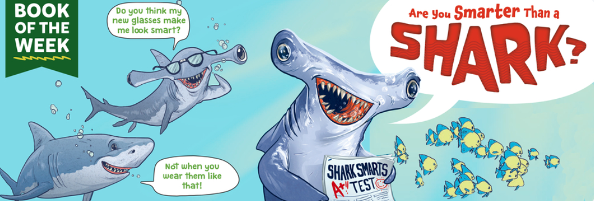
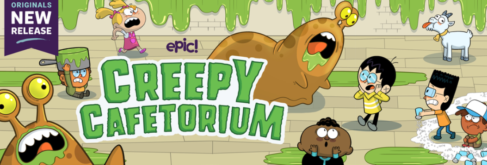
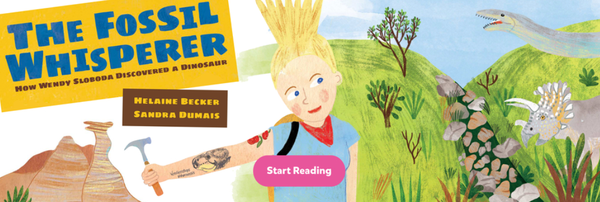
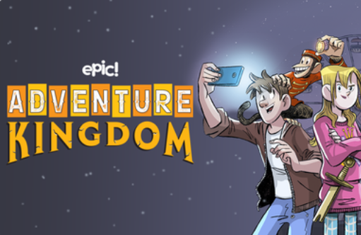

10 at 10: The Surprising Childhoods of Ten Remarkable People
May 4, 2022
Ten brief illustrated biographies give young readers a fresh look at the lives of people they may only know through history books.
Comments 0

Are You Smarter Than a Shark?
April 5, 2022
People once thought that sharks weren’t very smart. It turns out those people were WRONG!
Comments 2

Creepy Cafetorium
Gym class, lunch, play rehearsal…sometimes you have plans in the Cafetorium, and sometimes the Cafetorium has plans for you!
Popular Posts

The Fossil Whisperer: How Wendy Sloboda Discovered a Dinosaur A captivating look at the life of a modern-day fossil hunter who makes the find of a lifetime.

The Fossil Whisperer: How Wendy Sloboda Discovered a Dinosaur A captivating look at the life of a modern-day fossil hunter who makes the find of a lifetime.